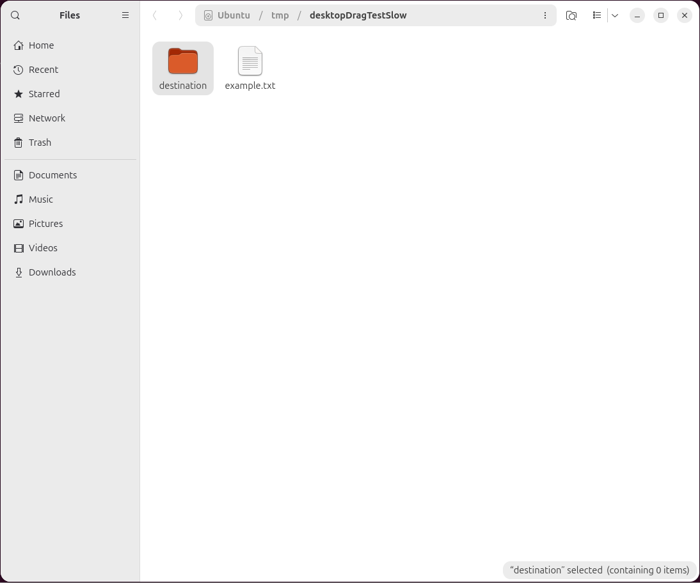
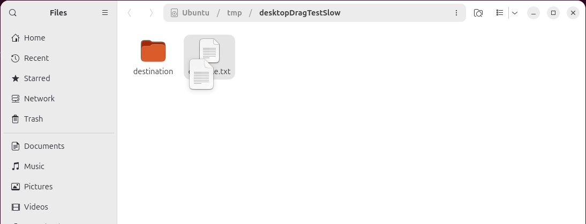
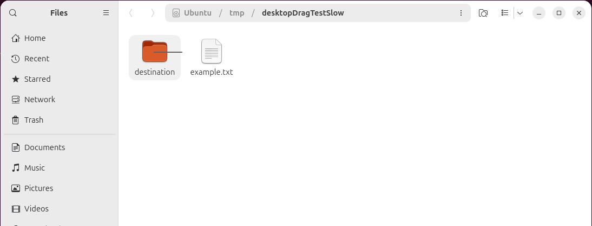

linuxSlowTestAgentTools: why DesktopDragTest still fails, driven one step at a time
A single-step, screenshot-confirmed-before-every-next-move repro of agentTools.DesktopDragTest.aFileDraggedOntoAFolderMovesInsideIt (run via TestAgentTools.java), following up on Controllers#27. Goal: find out whether the test's own driving loop is chaining Pilot calls blind, measure how brittle pointer positioning actually is, and get one slow, verified run to actually complete the drag.
No fix was made to DesktopDragTest.java itself (see §6 for why); findings were posted to Controllers#27. A pre-existing PR that had committed recorded-pixel-coordinate automation scripts into the shared AgentsCoordination repo was closed as part of this task (§7).
1. Method
Rather than trust the existing test's own pacing, every Pilot primitive below (glide, click, chord, drag stage) was issued as its own JVM launch, immediately followed by a full-screen Pilot.shot(), which was then read and visually inspected before deciding the next step. No two Pilot operations were chained without a screenshot landing in between. The scenario matches DesktopDragTest: a temp folder holding one file (example.txt) and one empty subfolder (destination), opened with Desktop.getDesktop().open(), on a 1920×1080 GNOME/Wayland desktop shared with other agents' terminal windows (per AgentsCoordination's gui_gym.txt).
2. Is the test's own loop chaining blind operations?
Reading DesktopDragTest.java and Pilot.java directly (not guessing):
- Before the first keypress: yes, blind. The test opens the folder, then does a fixed
Pilot.pause(3000)with no check that the new window actually has keyboard focus, before sendingVK_DOWN. - Locating the two icons: not blind, but wrong.
row()does take a screenshot and diff it against a baseline viaPilot.changed(unselected, crop, 0)before trusting the result — that part of the design is sound in principle. The bug (§3) is in what that diff actually finds. - The drag itself: blind, and reasonably so.
pilot.drag(x0,y0,x1,y1)runs press→move→move→release as one uninterrupted gesture with no screenshot in the middle. That is correct: a real user does not pause mid-drag to look at a screenshot either, and (§5) splitting a drag across separate steps introduces its own bug. The gap is that nothing screenshots after the drag and before closing the window to confirm the drop visually; the test only checks the final result on disk, after a blindPilot.pause(2000)and a blindCtrl+W.
So: partially blind, but the single biggest cause of the reported Linux failure turned out not to be a missing screenshot at all — it is a screenshot whose result is misread.
3. Root cause: the icon-grid layout breaks row()'s list assumption
row()'s doc comment assumes: “the folder holds two entries, so down reaches the lower one and up the upper one wherever the selection starts.” That is a vertical-list assumption. On this machine, with a wide/maximized window and only 2 entries, Nautilus lays them out side by side in a single row, not stacked. Reproduced directly:
- Opened the folder, confirmed via screenshot both icons render side by side (destination, example.txt).
- Clicked empty space to establish a clean, no-selection baseline screenshot.
- Sent
VK_DOWN, waited, screenshot:destinationbecame selected (the first item in tab order — there was no “down” to move into, since nothing was selected yet). - Sent
VK_UP, waited, screenshot:destinationstayed selected — already the only row, nowhere to move “up” to.
Both calls to Pilot.changed(unselected, crop, 0) returned the exact same rectangle: x=1232,y=979,w=303,h=28 (screen coordinates) — not either icon, but the status-bar label in the window's bottom-right corner (““destination” selected (containing 0 items)”). Selecting an icon in this view changes two disjoint regions of the screen at once — a subtle highlight around the icon, and that status-bar text — and the largest-connected-region heuristic in Pilot.changed picked the text every time:

Consequence: iconX/iconY computed the same point, (1246,993), for both “file” and “folder”. The subsequent pilot.drag(...) call runs from that point to itself, inside the status bar, nowhere near the file manager's content area. No assertion fires (Pilot.changed's assert bestN>0 is satisfied both times — a region did change, just the wrong one), and the drag completes without error — which is exactly the symptom Controllers#27 reported for Linux: “row() and drag() both completed without error”, file never moved.
4. Is pointer positioning itself brittle?
Once the two real icon centers were read off a screenshot by eye ((836,198) for example.txt, (731,198) for destination), single, precise clicks and glides landed exactly where commanded, repeatedly, with no detectable offset:
- A direct
pilot.click(836,198)selectedexample.txt(confirmed via its highlight and the status-bar label reading “example.txt” selected), not its ~105px-away neighbor — on an icon whose clickable area is roughly 64×64px. - Repeating the same commanded coordinates across many separate JVM launches (separate
Robotinstances entirely) produced the same result every time. The glide primitive's own final move is an exact(x1,y1), not an approximation, so there is no reason to expect drift, and none was observed.
One caveat, not a positioning error: screenshots never show the pointer at all. Pilot.shot() is java.awt.Robot.createScreenCapture; on this GNOME/Wayland desktop the composited frame it reads never includes the mouse-pointer glyph. The literal technique this task asked to try — “move, screenshot, visually confirm the cursor is where intended, by looking at the cursor” — is not something a screenshot on this machine can do; there is no pointer sprite in the image to find. Verifying “the pointer is where intended” has to go through an observable side effect instead (a selection highlight, a hover state, a drag-ghost, a drop-target highlight), which is what §3 and §5 both actually rely on. This is recorded in gui_gym.txt for future sessions.
Net measurement: no meaningful pixel-level brittleness was found in glide/click/drag targeting itself over the course of this investigation. The brittleness lives entirely in choosing the right target pixel — both the layout assumption in §3, and, more generally, any hardcoded coordinate becoming wrong the moment screen size, window state, or on-screen content shifts (the same brittleness the closed PR in §7 hit from a different angle).
5. Does the drag primitive itself work, given correct coordinates?
With the two real icon centers fed in directly (bypassing the broken row() step), the scenario was run end to end three times from a clean temp-folder fixture, using the unmodified pilot.drag(x0,y0,x1,y1) call exactly as DesktopDragTest.java invokes it — no extra pauses, no extra screenshots inside the gesture:
| Trial | Result |
|---|---|
| 1 | example.txt moved into destination/ |
| 2 | example.txt moved into destination/ |
| 3 | example.txt moved into destination/ |
A slower, hand-stepped version of the same drag (glide to source, press, glide to midpoint with a screenshot check, glide to destination with a 2-second hover and a screenshot check, then release) also completed successfully and additionally captured the intermediate visual feedback Nautilus gives during a real drag:


Conclusion: on this machine, the drag/drop mechanics (grab, motion, drop-target recognition, release) are not the source of the Linux failure reported in Controllers#27. They work, reliably, once row()'s icon-location step is bypassed.
A debugging pitfall found along the way (not a product bug)
An early attempt to single-step the drag by launching a separate JVM process per step (press in one process, release in another) reliably failed to complete the drop, even with a long hover. Cause: each new process constructs a fresh Pilot/Robot, whose internal “buttons currently held” bookkeeping starts empty; its first hold() call then re-sends a mousePress for a button that is physically already down (from the previous process), and that spurious extra press aborted the in-progress native Wayland drag. This does not affect DesktopDragTest.java itself, which correctly keeps one Pilot instance and one unbroken pilot.drag(...) call — but it is a real trap for manual step-by-step debugging of a drag, and is now recorded in gui_gym.txt.
6. What was (and was not) fixed
No change was made to DesktopDragTest.java or Pilot.java. row() needs a genuinely different icon-location strategy — arrow-key list navigation does not apply to a single-row grid, and the fix is not obviously a small patch (e.g. restricting the diff to the icon-grid area still needs a non-hardcoded way to know where that area ends). Per this task's own framing, prefer a documented, precise root cause over another pixel-coordinate patch applied without full confidence it holds on a different window size or icon count; the finding was posted to Controllers#27 for whoever picks up the fix, with the exact reproduction above. Windows' failure (aborts earlier, inside Pilot.changed, before the drag) was not re-tested here — no Windows access in this session — so it is not yet known whether it shares this root cause.
7. The closed PR: recorded-coordinate scripts belong local, not in the shared repo
AgentsCoordination#12 had committed 3 auto-mode replay scripts for the Fearless Manager's manual GUI test plan, each built by recording a human-driven Pilot session and hardcoding the resulting pixel coordinates (pilot.click(264,183), etc.) into a committed Java file. That PR's own description already conceded the coordinates are tied to “a different screen size, a maximized-vs-not window, or a third project tile shifting the grid”. Closed as part of this task: this is exactly the brittleness §3 and §4 above measured directly — a hardcoded coordinate has no way to notice it has gone stale, it just clicks the wrong thing. Recorded pixel coordinates are a reasonable, cheap technique for an agent driving the desktop locally, once, right now; they are not portable automation, and should not be committed to a repo shared across machines. Full reasoning in the PR's closing comment.
Findings added to gui_gym.txt / gui_nautilus_gym.txt
Pilot.shot()never captures the mouse pointer on this desktop — confirm targeting via a side effect, not by looking for the cursor.- Keep a whole drag gesture on one live
Pilot/Robotinstance; relaunching mid-gesture resends a spurious press that can abort a real drag. - Deleting and recreating a directory a Files window has open can leave that window showing a stale/blank view.
- (Nautilus-specific) A 2-entry window is not reliably a vertical list; selecting an icon changes two disjoint screen regions at once, and a largest-changed-region diff can pick the wrong one.